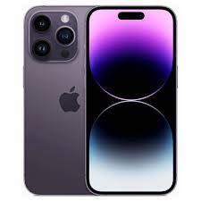
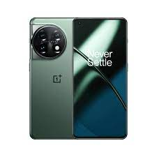

| IPHONE | REAL ME | ONEPLUS |
|---|---|---|
|  |  | |
|
The Apple iPhone quickly comes to mind for its chic appearance and abundance of apps, for instance.
The iPhone is a smartphone made by Apple that combines a computer, iPod, digital camera and cellular phone into one device with a touchscreen interface. The iPhone runs the iOS operating system, and in 2021 when the iPhone 13 was introduced, it offered up to 1 TB of storage and a 12-megapixel camera. |
realme became one of the first smartphone manufacturers equipped with Qualcomm Snapdragon 865 5G chips.
Realme is a Chinese smartphone company established on May 4, 2018 (National Youth Day of China), by former Oppo vice-president and head of overseas business department, Sky Li. The company was initially set up as a sub-brand of BKK Electronics' Oppo Mobiles but later incorporated as an independent entity. |
It is a great phone because my friend has one and it has a type of material on the back of the phone and also phone is thin! GO for IT
OnePlus was made on 16 December 2013 by former Oppo vice-president Pete Lau and Carl Pei. The company's main goal was to design a smartphone that would balance expensive quality with a lower price, believing that people who buy the phones would "Never Settle" for the lower-quality phones made by other companies. |